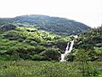
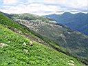
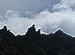
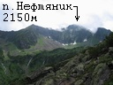
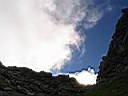
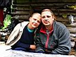
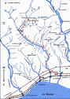

|
|
Водопад Каскадный, пик Нефтяников (2150м)
|
||||||||||||||||||||||||||||
Заходила наша маленькая компания в конкретный дождь. Я, Оксана, Саша и пан Аверинский - вымокли уже в самом начале пути. А что же вы хотели - трава на полянах в рост человека, Хамар-Дабан :) Пятница, 13-е, спасибо что не полнолуние. Подошли к ручью Водопадному в полной потере тропы. Пришлось отправить самого маленького искать где-то тут в лесу зимовье и поляну. |
||
|
У-У-У ! Страшна ? |
||
А там уже была компания, ребята шли перед нами на расстоянии двух часов. Уже затопили печь и варят борщ. Зимовье вполне приличное, я таких зимовий еще не видел. Мы поставили рядом палатку, натянули полиэтиленовый тент и развели костер. Заходили примерно часов 8-9, хватит, пора бы и отдохнуть. В виде эксперимента не брал с собой спальник, думал надышим в палатке и тепло будет, но вот дверь закрыть забыл перед сном и как-то сквозило :) Маленький спальник - рульная весчь :)
Суббота. Утро туманное, утро сырое... Наши соседи убежали очень рано. Саша спал у костра, а они его наверное разбудили, и поэтому он всю дорогу называл их "странные ребята". Плюс еще его одолевали разные сомнения о пропавшей в зимовье бейсболке :) ну да она потом нашлась :)

А может мы и на пик сегодня сходим? а чего бы и не сходить, вроде бы недалеко
до него осталось? Порешили все-таки сходить, пока погода позволяет. Вот
только из еды один арахис, семечки и немного конфет. А путь выдался долгий
и "сцуко-опасный" - траверсом по травянистому склону, плюс еще
всякие скальные стеночки на дороге появляются неожиданно, да еще стланник
со курумником. А люди же не все "сайгачить" умеют, кто-то же
еще и "бояццо" должен :) Вот потихоньку и подошли к подъему
на перевал.
|
 Зеленый склон |
 Сфинксы и пирамида |
 Пик в облаке |

С перевала вид отличный, особенно в ту, в другую сторону, которая как-то
неожиданно открылась. Очень такое заманчивое озеро под горой справа, из
этого озера водопад прямо во второе маленькое озерце. Очень красиво. Обязательно
надо туда сходить как-нибудь и искупаться.
А нам сейчас надо идти налево, вверх по гребню. Оксана от такого мероприятия
категорически отказалась и осталась ждать медведов на перевале. Перекусили
последними арахисовыми орешками и пошли.
И как-то быстро пришли. Вот и вершина. Здравствуй, Нефтяник !
К нашей радости побродили ежиками в тумане недолго. Облака поднялись,
открыли панораму и понеслись мимо, прямо над головами. Мы под облачным
потолком, ну где еще такое увидешь, как не в горах! А вокруг россыпи озер,
нитки ручьев, вершины-башни, гребни-стены. За какой-то из этих стен -
Соболинное озеро. Почти рядом :) А там на юге - главный хребет старика
Хамар-Дабана. Ничего, мы еще доберемся до него :)
Самое интересное, что высота Нефтяника - 2150м, а я ведь выше на Хамар-Дабане
и не бывал, да и мои спутники тоже, так что быстро поздравляемся, фотографируемся
у развалившегося тригопункта и идем обратно!
"Долгая дорога домой" - спуск с перевала по сыпухе, дольше чем поднимались, обход скользкого травянистого склона по курумнику и по зарослям кедрового стланника, блуждание в сгущающихся сумерках по высокой траве, кустам, спуски по скальным сбросам (спасибо кедровому лианнику :). К стрелке ручьев вышли под звездами, развели костер, а самого маленького отправили в страшный черный лес, искать тропу и добывать фонарики в палатке. А вот вам за это домик для индейцев, а не сало :) Четвертый час ночи, сколько можно ходить, спать уже пора. Быстрые ребята уже давно в зимушке посапывают, опять с утра пораньше убегут. Мне бы тоже завтра пораньше выйти надо, то есть уже сегодня :)
|
 Оксана и Саша |
Воскресное утро. Оксана и Саша остаток ночи романтично просидели у костра, проводили быстрых ребят, теперь провожают меня. И только пан Аверинский отсыпается как белый человек в выходной день. Они все в отпуске, счастливые, им никуда спешить не надо, будут выходить завтра. А я догоняю на полпути быстрых ребят и бегу с ними до трассы. Надо сказать, что не только ребята быстрые, но и девчата. А как эти красавицы штурмуют Гремячий ручей, это надо было видеть - без остановки, на проход! ЗачОт! В общем, пробежались славно, дорога обратно заняла 5,5 часов, давно так не бегал :)
Июль 2007
Алексей Белокрылов
Фотографии автора :)
